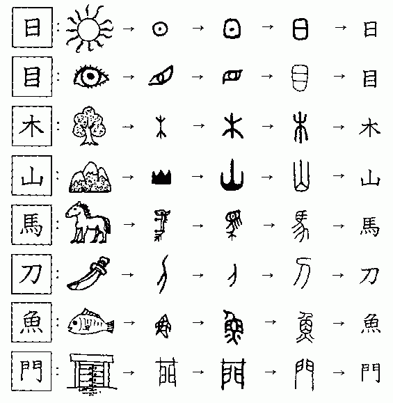
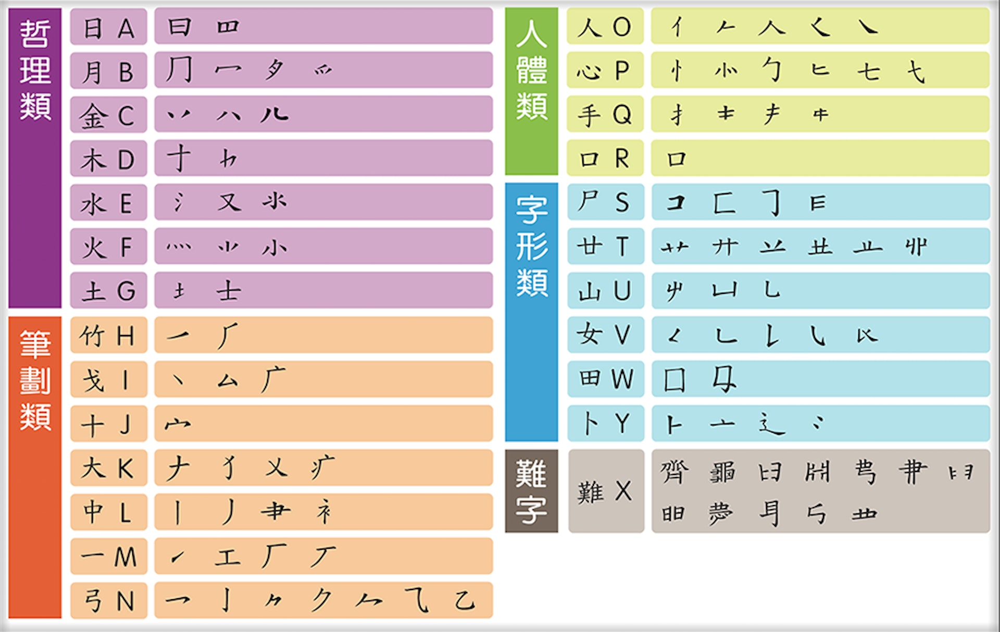

Sometimes I hate myself to think about irrelevant shit when I am busy with assignments! But the more I think of it I realise the only way to stop it is to write it down!
Sometimes I am pissed how people say how difficult it is to learn Chinese with the Chinese characters as a barrier, and thus refuse to learn this elegant language. Let me try to break it down for you perhaps?
So basically the idea is whatever hieroglyph or pictography its called, what makes (traditional) Chinese so complex from the Latin script is that they have a differnet root. Simplified Chinese characters is excluded in this discussion, since the simplification takes out some of the essense of Traditional Chinese, and I'm afraid that it doesn't make sense in the idea I'm proposing. Simplified Chinese only has a few decades' history, invented by the Chinese communist government after 1949 to eliminate illiteracy in mainland China.
While the Traditional Chinese characters came from the oracle bone script, that the alphabet's shape describes the shape of the object. It carries the ancient Chinese wisdom, so in this case may I criticise the destruction of ancient Chinese language with the invention of Simplified Chinese characters, and the policy that makes Mandarin the lingua franca of greater China. Mandarin comes from the nothern part of China and it's a mixture of Mongolian language and ancient Chinese language, and Mongolians invaded China and ruled us! (see Anti-Qing sentiment if you are interested) It in fact has a shorter history in China, and the sound doesn't make sense at all in terms of rhyme/ iambic schemes if you try to read the ancient poetry. But it makes so much more sense if it is read in the southern "dialects" (I personally think they are languages and doesn't deserve such demoralisation) like Hakka, Cantonese, or Hokkien (Taiwanese). Why were they trying to marginalise the ancient Chinese languages? See what the modern Chinese government is taking away from us? Trying to cut off people from their roots??
This is why as a speaker of Cantonese and a writer of Traditional Chinese I feel a mission to alert people of the cultural threats we are facing.
Back to the discussion. From the chart you can more or less guess the meanings of the alphabets:
日 = sun, 目 = eyes, 木 = wood, 山 = mountain, 馬 = horse, 刀 = blade, 魚 = fish, 門 = door
Easy right?
While in the formation of Chinese characters these work as "radical"（部首）, somehow like the prefix and suffix in the English language. Radicals are base components that takes many of the oracle bone script characters to categorise objects and made patterns to describe objects. So in theory if you understand how the traditional Chinese characters are formed and know the meanings of these components, you can have an idea of what type of objects the word is describing, and perhaps what the word means.

Made some rough notes on it, and I realised the (Simplified &/) Changjie input method system of the Chinese characters also use these radicals to break down most of the Traditional Chinese characters. So if you grasp the theory of radicals and how the input method works, you can even type Chinese characters without knowing its exact meanings and how it sounds.
In fact, in Hong Kong we teach Cantonese (spoken) and Traditional Chinese characters (written) Chinese sometimes by this theory, and we remember how it reads and the shape by iteration. It's so different with how in Taiwan and mainland China, they teach students Zhuyin or Pinyin phonetics before moving on to teaching them how to write their name in Chinese characters. The LSHK Jyutping Cantonese phonetic system is developing its popularity nowadays but yet to be institutionalised and taught in schools. It should be easy to understand for English speakers since it shares similarity with IPA phonetic system. TypeDuck will be one of the useful tools to practise. But let me warn you, Cantonese is highly colloquial and has 9 tones. So if you really want to learn some Cantonese, make some Hong Kong friends and let them teach you how to say 'diu nei lo mo (f* your mother)' instead!
I will tidy these ideas up later this month for sure!! Just try to mark down some ideas here, as I have already been thinking this for months: how to make Chinese easier and fun for foreign language learners? How can I promote this to my monolingual classmates? Can we just back to basic and introduce the linguistic characteristics first, so people might have a pattern in mind before they dig into the culture?
Interesting video from youtube algorithm